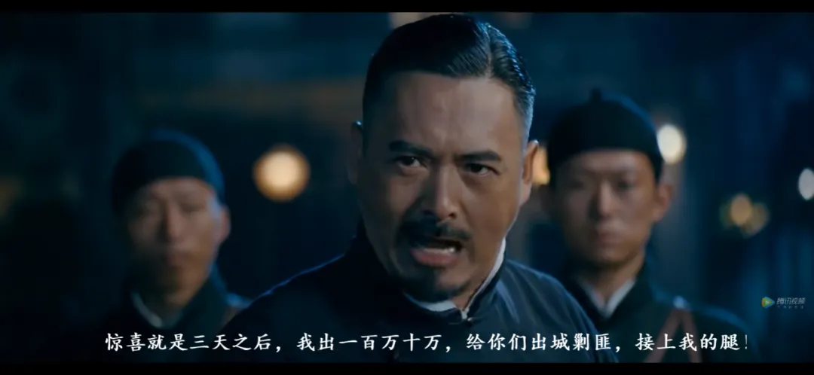

恒大的未来
这篇文章的影响可能会比较大，修修改改，水了，能不能存活，未可知。昨天改了一天，推迟至今天发文。
其实恒大如今的舆情这般汹涌，一是规模大、涉及范围广、关注度高；二是如今的境况和过往自家的宣广对比，落差太大，显得很唐突。
写这篇文章的本意是反思，无论文章是否能够留存，都希望恒大能反思、总结过往的点滴，房地产行业引以为鉴。
让我们一起， 站在过去，看未来 。
NO. 1｜壹
此前曾写过《恒大的困境》，作为恒大系列的开篇，影响很大，后来被和谐了。那么，就将本篇作为系列篇的终篇。
地产三十年，生于草莽，长于江湖，兴于杠杆，归于平凡。
前三十年，恒大一路狂奔，尤其是在09年之后，即便是在地产去杠杆的大环境下，恒大也曾顶着“三道红线”一路买买买，豪掷亿万金，辅以铺天盖地的宣传，一副豪大的形象。
彼时的恒大，在外界众人眼中，金光闪耀、高大伟岸.....
这一切美好成为回忆的转折点，是去年9月份的债务“罗生门”，对此，恒大虽然发公告辟谣并称已报警，但随后转债股等一系列动作，却从侧面印证了恒大资金吃紧的事实。
随后，从恒大汽车被调侃为“PPT造车”开始，到引入战投被扒出利益共同体，再到恒大汽车在上海车展的一系列操作，更是破圈而出，成为全民吃瓜的热点。
上海车展中，奔驰、宝马、奥迪、特斯拉等一众品牌车都允许体验，恒驰却是连三步之内都不可靠近，展台上“东方雄狮，傲视全球”的字样格外晃眼。
吃瓜群众调侃：左边是特斯拉，右边是奔驰奥迪，一定是掌握了核心技术、国产技术的恒驰技术水平太高，谨防商业窃密，才无奈把所有的玻璃都装上了纯黑玻璃膜，设置围台，严防死守。
这届车展瓜多，有人车顶维权，有人在车底解密，恒驰“底盘门”、两个人可以抬走的模型车等事件，和众宣广的文稿中恒驰的高大上、恒驰试驾的良好体验、恒大的实力雄厚等宣传语，形成了强烈的反差和对比，一种 巨大的撕裂感和落差 油然而生。
“ 皇帝（ HD） 的新装 ” 再次被当作茶余饭后的谈资、众人 津津乐道。
我的梦想之一，是希望未来几年，能亲自驾驶恒驰汽车过过瘾，顺便用恒大冰泉给它洗个澡。
NO. 2｜贰
4月， 恒大投放的一些宣广中，一众垃圾自媒体纷纷鼓吹 宣扬“”今天的恒大已经不是过去的恒大“，是八大产业齐头并进的 “新恒大”。
余音未落，商票被曝大规模逾期，恒大公告解释仅有部分未及时兑付；之后又是三棵树的财报中被挖出恒大拖欠款项5000多万元，恒大解释称已兑付；
恒大偿还了一笔海外债务，并刷屏朋友圈，这让很多人很不解，欠债还钱不是天经地义的事嘛？怎么还成了喜事？
随后，恒大频频面临诉讼危机：
7月19日，广发银行股份有限公司宜兴支行以“情况紧急，不立即申请保全将会使其合法权益受到难以弥补的损害”为由，向江苏省无锡市中级人民法院申请诉前财产保全，冻结恒大1.32亿元资金。
当天，恒大系股债双杀，3天后，双方官宣达成和解。
同一天，邵阳市住建局发文宣布暂停恒大两个项目的网签交易，原因系监管金额与实际销售金额不符，存在账外收存和使用预售资金及蓄意逃避监管行为。恒大随即整改，隔天便恢复网签。
7月底，兰州市自然资源局发布公告，要求41家开发企业补缴土地出让金。名单中有20家隶属恒大。
7月29日，廊坊发展公告称，因司法案件执行需要，恒大地产持有的7603.21万股（20%）廊坊发展股份即日起被冻结。
同日，淮北矿业起诉恒大及下属公司，拖欠工程款和违约金，合计4.01亿元。7月30日，恒大分别对这两诉讼作出回应。
8月2日，利欧股份公告称，因恒大未按合同约定如期支付广告费，已向相关法院提请诉讼及财产保全，合计申请保全金额为3.56亿元，并已收到广东省深圳市中级人民法院发来的《受理案件通知书》。
同日，国际评级机构穆迪等，下调恒大的评级。恒大对此表示失望，天机在朋友圈看到大量的恒大员工转发，恒大被境外势力做空的新闻。
一澡堂起火，一群浑身赤裸的人往外跑，白花花的站在大街上，最该捂的是脸，因为下面都一样。
好好想一想，恒大这一通操作下来，捂的是脸吗？
NO. 3｜叁
近期，据财新消息，最高院要求，所有涉及恒大集团及其关联企业的案件都统一移交到广州中院集中管辖。
从某种程度上，这也说明恒大化解债务已到了一个关键的阶段。
被集中管辖，案件统一集中到广州中院，一方面可以集中化解矛盾，提高解决问题的效率。在集中管辖之下，广州中院能够站在全局的角度开展工作，更好地解决债务纠纷。
另一方面也在给恒大争取时间，从一定程度上避免恒大被‘挤兑’。随着到期债务越来越多，一些债权人开始采用诉讼的方式去维权，若遇众多 债权人集中起诉恒大，进行财产保全，很容易直接导致恒大资金链断裂 。
今年，恒大大规模的打折卖房活动席卷众多城市，操作已经很明确，想尽一切办法获取现金流。
房企在借新还旧这条路上，如今已经很难走通，那么首先考虑的，是卖房回血。但没有网签的房子，表面上看，是卖出了资产，获得了现金流，实际上却是债。
例如：抵押给银行获取贷款的房子尚未解押，便已经将其打折全款卖给购房者（2年后网签），再获得一次现金流。从本质上来说，购买这种没网签的房子，等于购房者把钱借给了恒大度过难关。
有一个风险是：没网签的房子，压根不知道被卖了几次。
从恒大的应对的方式来看，一开始的思路并非将核心资产变现还债，而是通过资本运作，金融手段等方式获得现金流，如多元化上市变现。
有常规的抵押贷等操纵，从银行贷款获取资金；有卖给购房者一个赚钱预期，获取现金流；也有数额高达2000多亿元的商票。
NO. 4｜肆
售卖资产、引投是过往地产企业遇到危机时的主要策略。福晟、泰禾、华夏幸福、蓝光等，莫不如此。
6月20日，中国恒大转让7.39亿股恒腾网络股份，对应总价为44.33亿港元；6月21日，恒大以27.62亿元，转让嘉凯城29.9%股权；
7月31日，恒大退出深圳高新投的股东行列，7.08%股权转让予万科旗下子公司，据财新消息，双方交易对价超10亿元。
8月1日晚，恒腾网络公告称，中国恒大方面拟出让公司11%股权，合计作价32.5亿港元。
8月10日，恒大称，将出售其部分资产予独立第三方投资者，包括但不限于出售公司上市附属公司恒大汽车和恒大物业的部分权益。
第三方投资者，传闻的名单中有万科、保利、越秀、珠江投资、广州城投等。对此，目前恒大未予证实。
其实股权才是恒大汽车最大的资产。
此前，恒大汽车曾引入战投，其中有一位是京基集团的董事长陈华。据财新调研，这笔股权交易的实质，是恒大汽车实控人许家印与陈华商议，由陈华出让京基地产在建项目“京基御景荟都”给恒大地产，所得资金用于定增，换取恒大汽车一定份额的股权。
用恒大汽车没什么成交量，且此后”脚踝斩“的股权，换深圳货真价实的260亿地产项目，怎么看都觉得恒大爆赚。
这一波操作，站在大气层，不愧是玩金融的......
别忘了，恒大新能源汽车此前在全国各地撸下的几千亩地，若有接盘恒大新能源汽车的房企，真的会是为了造车吗？醉翁之意不在酒。
甚至于，为了增加恒大新能源汽车的吸引力，恒大也可以将旅游原健康的项目，划给汽车集团。
恒大卖股自救卖的时间过晚了，如果在半年前，恒大汽车股价高位上，或许能卖个好价钱救恒大脱困（ 人最可怕的错觉就是：我可以）。 现在受到恒大基本面不佳的影响，恒大汽车和恒大物业，已经很难卖出高价 。
除了新能源汽车和物业， 接下去一段时间 ，矿泉水业务 、文旅业务 、 深圳的旧改项目，大概率 都要动。 通过“市场化”途径化债 。而 恒大的核心资产 ， 是深圳 那 批 高货值的旧改项目。
恒大的未来？或许，我们更应该借此窥见房地产行业的未来。

都说大鱼吃小鱼，小鱼吃虾米。但在海洋中，即便是体型最大的蓝鲸，也有天敌：虎鲸。
一个时代落幕了，道 阻且长，剩者为王 。 ****
** **
按日期浏览全部来源（同日按条目标识排序）